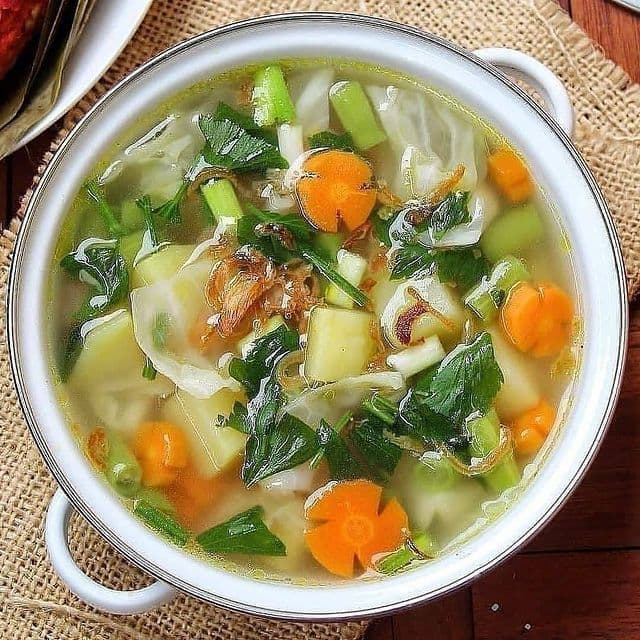

🥣 Resep Sayur Sop

Tentang Sayur Sop
Sayur sop merupakan hidangan berkuah yang terdiri dari berbagai macam sayuran. Rasanya yang gurih dan segar membuat sayur sop cocok disajikan sebagai menu sehari-hari bersama keluarga.
Bahan-bahan
| No | Bahan | Jumlah |
|---|---|---|
| 1 | Wortel | 2 buah |
| 2 | Kentang | 2 buah |
| 3 | Kubis | 100 gram |
| 4 | Daun bawang | 2 batang |
| 5 | Seledri | 2 batang |
| 6 | Bawang putih | 3 siung |
| 7 | Garam | Secukupnya |
| 8 | Air | 1 liter |
Cara Membuat
- Cuci semua sayuran hingga bersih.
- Potong wortel, kentang, dan kubis sesuai selera.
- Haluskan bawang putih kemudian tumis hingga harum.
- Rebus air hingga mendidih, kemudian masukkan wortel dan kentang.
- Setelah sayuran mulai matang, masukkan kubis, daun bawang, dan seledri.
- Tambahkan garam dan bumbu sesuai selera.
- Masak hingga semua sayuran matang.
- Sayur sop siap disajikan selagi hangat.